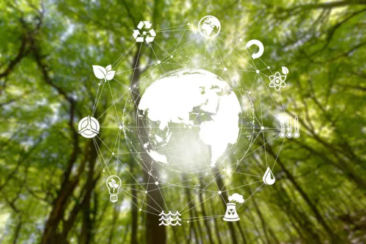
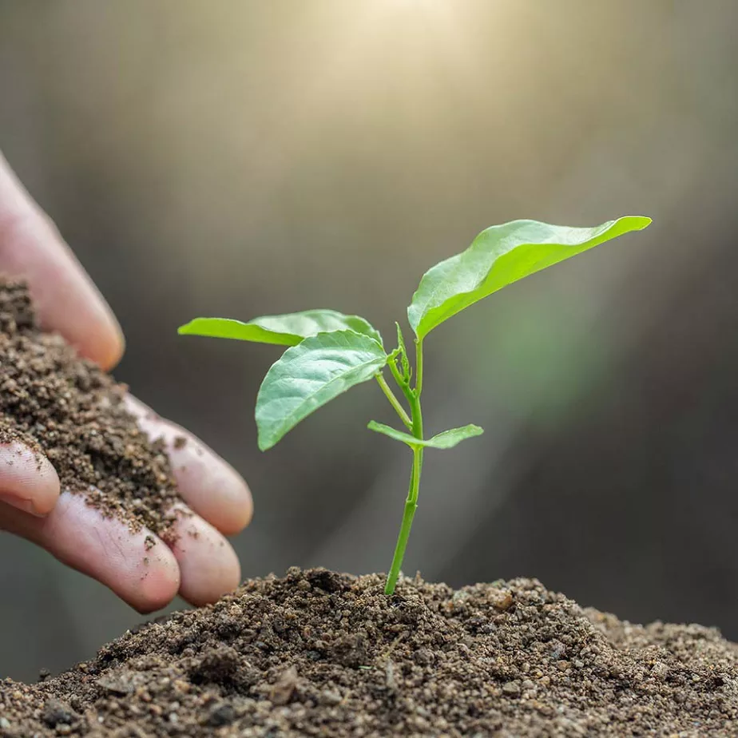

-
Meio Ambiente
- Projetos
Título Mega Menu
- Links Úteis
- Sobre Nós
Saiba Mais

O meio ambiente é o local onde se desenvolve a vida na terra, ou seja, é a natureza com todos os seres vivos e não vivos que nela habitam e interagem. Em resumo, o meio ambiente engloba todos os elementos vivos e não-vivos que estão relacionados com a vida na Terra. É tudo aquilo que nos cerca, como a água, o solo, a vegetação, o clima, os animais, os seres humanos, dentre outros.
Preservação Ambiental
A preservação do meio ambiente faz parte dos temas transversais presentes nos Parâmetros Curriculares Nacionais (PCN's). O seu objetivo é incitar nos estudantes a importância de preservar o meio ambiente e os problemas causados pela intervenção humana na natureza.
Qual a diferença entre Preservação e Conservação Ambiental?
Os termos preservação e conservação ambiental são constantemente confundidos. Porém, cada um deles possui um significado e objetivos diferentes.
- Preservação Ambiental: É a proteção sem a intervenção humana. Significa a natureza intocável, sem a presença do homem e sem considerar o valor utilitário e econômico que possa ter.
- Conservação Ambiental: É a proteção com uso racional da natureza, através do manejo sustentável. Permite a presença do homem na natureza, porém, de maneira harmônica.
Um exemplo de áreas de conservação ambiental são as unidades de conservaçãoElas representam espaços instituídos por lei que objetivam proteger a biodiversidade, restaurar ecossistemas, resguardar espécies ameaçadas de extinção e promover o desenvolvimento sustentável. >Atualmente, as questões ambientais envolvem a sustentabilidade. A sustentabilidade é um termo abrangente, que envolve também o planejamento da educação, economia e cultura para organização de uma sociedade forte, saudável e justa. A sustentabilidade econômica, social e ambiental é um dos grandes desafios da humanidade.
Meio Ambiente e Sustentabilidade

O termo sustentabilidade surge da necessidade de aliar o crescimento econômico com a preservação ambiental. A essa nova forma de desenvolvimento, damos o nome de desenvolvimento sustentável. Ele tem como conceito clássico ser aquele que atende às necessidades do presente sem comprometer a possibilidade das gerações futuras atenderem as suas próprias necessidades. Para que o desenvolvimento sustentável seja uma realidade é necessário o envolvimento de todas as pessoas e nações do planeta. As ações vão desde atitudes individuais até acordos internacionais.
"o conjunto de condições, leis, influências e interações de ordem física e biológica, que permite, abriga e rege a vida em todas as suas formas" .
Meio Ambiente no Brasil
No Brasil, a Política Nacional do Meio Ambiente, Lei nº 6.938, de 31 de Agosto de 1981, define os instrumentos para proteção do meio ambiente. É considerada o marco inicial das ações para conservação ambiental no Brasil. A Política Nacional do Meio Ambiente tem como objetivo a preservação, melhoria e recuperação da qualidade ambiental propícia à vida. Também visa assegurar condições ao desenvolvimento socioeconômico, aos interesses da segurança nacional e à proteção da dignidade da vida humana. A Constituição Federal Brasileira também possui um artigo que trata exclusivamente do Meio Ambiente. O artigo 225 cita que: “Todos têm direito ao meio ambiente ecologicamente equilibrado, bem de uso comum do povo e essencial à sadia qualidade de vida...”
Educação Ambiental
A educação ambiental corresponde aos processos por meio dos quais o indivíduo e a coletividade constroem valores sociais, conhecimentos, habilidades, atitudes e competências voltadas à conservação do meio ambiente. O seu objetivo é a compreensão de conceitos sobre o meio ambiente, sustentabilidade, preservação e conservação. Além da construção de novos valores sociais, aquisição de conhecimentos, atitudes, competências e habilidades para a conquista e a manutenção do direito ao meio ambiente equilibrado.
Problemas Ambientais
Nas últimas décadas, o meio ambiente vem sofrendo cada vez mais com a ação humana, uma delas é a prática da queimada. Como essa intervenção nem sempre é harmônica e de forma sustentável, surgem os problemas ambientais. Os principais problemas ambientais da atualidade são
-
Mudanças Climáticas
Efeito Estufa
Aquecimento Global
Poluição da água
Poluição do ar
Destruição da Camada de Ozônio
Extinção de espécies
Chuva Ácida
Desflorestação
Desertificação
Poluição
- Ecossistema: Conjuntos de seres vivos (Bióticos) e não vivos (Abióticos).
- Seres Bióticos : Seres autótrofos (produtores) e heterótrofos (consumidores), ou seja, as plantas, os animais e os microrganismos.
- Seres Abióticos: São os fatores físico-químicos presentes num ecossistema, como a água, os nutrientes, a umidade, o solo, os raios solares, ar, gases, temperatura, etc.
- Biomas: Conjunto de Ecossistemas. Vale lembrar que os biomas que compõem o Brasil são: Biomas Amazônia, Bioma Caatinga, Bioma Cerrado, Bioma Mata Atlântica, Bioma Pantanal e o Bioma dos Pampas.
Conceitos Relacionados ao Meio Ambiente
Alguns conceitos importantes relacionados ao meio ambiente são:
Laila Hamorym
- Projetos